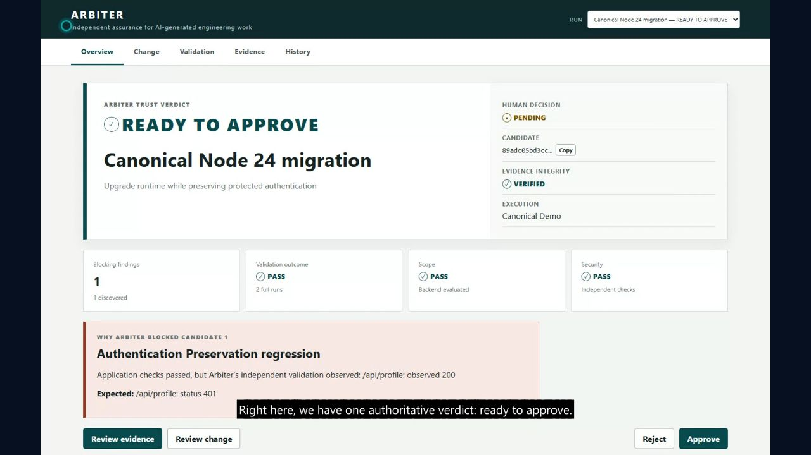

01
Orient on the verdict
Start with the decision boundary
You do: Select the canonical run and read the verdict, human-decision state, candidate commit, and integrity status.
Arbiter does: Reconstructs the run from persisted records and presents one current, candidate-bound verdict.
This proves: READY TO APPROVE is advice backed by evidence. It is not approval.
Say: “Before we inspect how the code changed, notice that automation has already stopped.”
